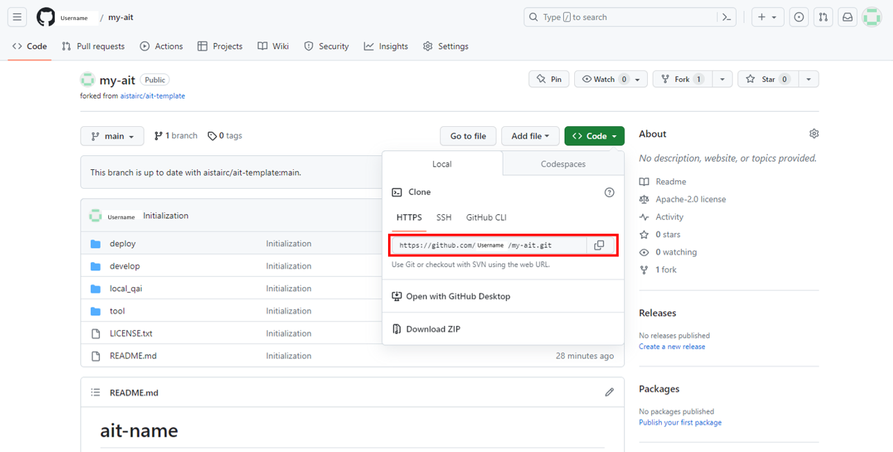

3.1. Preparation¶
After downloading and installing Qunomon, start developing an AIT based on the template.
3.1.1. User workflow¶
The development of AITs can be categorized into three scenarios: ① creating anew from an AIT template, ② updating an already developed AIT, and ③ having developed an AIT but not retaining the data locally. The workflow for each scenario is as illustrated below.
Note
If you do not intend to publish your created AIT globally, the steps beyond “releasing it on GitHub via a browser” are not necessary.
3.1.2. Fork the AIT template¶
AIT template is available on https://github.com/aistairc/ait-template.
Please fork this repository for your own AIT development.
Important
The AIT template repository is set to public. After forking, please review and adjust the visibility settings as necessary.
3.1.3. Change AIT repository name¶
AIT name (the part {YourAITName}), we recommend you to follow the naming convention as below.
3.1.3.1. Recommended naming convention of AIT¶
The recommended naming convention of AIT are as follows.
{prefix}_{target}_{format}_{task}_{measure}
| name | mandatory | description |
|---|---|---|
| prefix | Yes | This represents the type of AIT. - eval: Quality evaluation - alyz: Analysis - misc: Miscellaneous - generate: Used for AIT that generates data to be input to AIT. |
| target | Yes | Choose either "dataset" or "model" depending on the evaluation target of AIT. |
| task | No | The problem targeted by AIT. Example.image_classifier |
| format | No | The format of the data processed by AIT. Example. table |
| measure | No | The quality measured by AIT. Example. coverage_of_dataset |
restriction
The name must be 50 characters or less.
The available characters are half-width alphanumeric characters and underscore
_.
3.1.4. Clone the AIT repository¶
Fork the AIT template and clone it to your local machine. 
3.1.5. Edit readme.md¶
After create a directory for new AIT, open {YourAITName}/readme.md and edit title.
Before
# ait-name ...
After
# {YourAITName}
3.1.6. Launch development envionment¶
We are providing Jupyter Lab environment adjusted to the AIT development purpose as AIT development environment. After launching them, they are provided as web application on the localhost. You can use them through your browser.
Remove docker image
If you want to switch between multiple AIT development environments, you need to delete the AIT development environment docker images created in the past. This is because the dependent software changes depending on AIT, and the AIT development environment also changes the software installation status. We apologize for the inconvenience, but if you want to switch between multiple AITs for development, please use the following command to delete the docker image in the AIT development environment.
Remove docker image command
docker rmi {ImageId of docker_jupyter}
Launcher
Windows:
cd {YourAITname}/tool launch_devenv.batmacOS, Linux:
cd {YourAITname}/tool sudo bash launch_devenv.sh
3.1.6.1. Screenshots after launch¶
If the launch has succeeded, applications below are displayed automatically.
Jupyter lab

3.1.6.2. Development work flow¶
In this tutorial, we assume following work flow as default development work flow.
Experiment and development of an AI evaluation program.
Porting AI evaluation program onto the AIT template (edit my_ait.ipynb).
Perform unit testing of an AI evaluation program.
Preparing registration for Qunomon.
Perform integration testing of an AIT with Qunomon testbed.
Publishing the AIT.
This tutorial follows this sequence and explains the detailed development methods for AITs from Section 3.2 onwards.